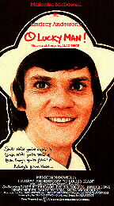

Chapter 6. O Lucky Man
After the success of Demolition Man, we were on the lookout yet again for something else new to occupy our minds and bodies. It came in the shape of an Alan Price / Lindsay Anderson musical film called O Lucky Man (starring Malcolm McDowell) which Chris Fogg was very keen on adapting for the stage. At the time I knew nothing whatsoever about it except the snippets that Chris had told me and the fact that it was a follow up to Lindsay Anderson's previous film called IF... that I also hadn't seen!
The basic plot can be summarised as follows:
"Malcolm McDowell stars as coffee salesman Mick Travis in the second film in the trilogy of films from Lindsay Anderson, following 1968's If, and followed by Britannia Hospital in 1982. This film is a surreal journey across England, where Travis stumbles into many weird and diverse situations. He is tortured by the MOD, and stumbles into a hospital where a patient's head is transplanted on to an animal's body. The film is added more surreal flavour because some of the actors play several roles. A very English surreal film."
~ The Internet Movie Database (www.imdb.com)
 So, full of expectations as all of Chris' previous ideas had been met with great enthusiasm, we had booked the Oldham Grange Arts Centre in advance for the week commencing May 29th 1978 for an entire £30 the week (a considerable sum in the late 1970's).
At the time there was a cinema called the Aaben in Hulme. Unlike modern cinemas it was possible to book to see a film of your choice, even if it wasn't a current release. There was a minimum number of people required for a booking, but with the size of our theatre group we able to exceed it.
We all went to the Aaben in Hulme to see a rare performance of the movie. The reaction fell into two camps:
- Those that thought it was unstageable
- Or those (like me) who simply loathed it
I was particularly disappointed with its bitty feel and plastic characters and didn't like any of the music by Alan Price either.
So that put an end to that in one fell swoop. We looked around for something else to do at the Oldham Grange Arts instead.